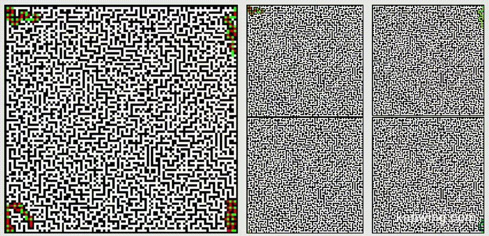
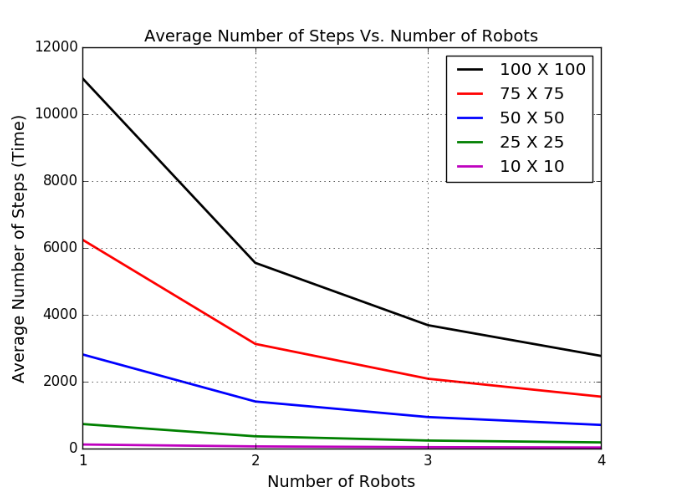
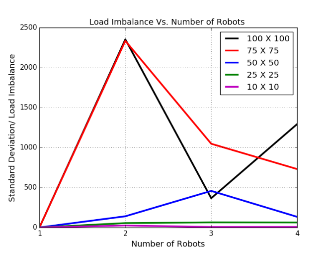

   <div class="">
            <div class="container">
                <div class="row">
                    <div class="col-lg-10-">
                        <div class="modal-body">
                          <div class="col-lg-8 col-lg-offset-2 text-center">
                            <h2>Multi-Robot Maze Mapping</h2>
                            <h4>September - December 2017</h4>
                            <hr class="star-primary">
                            
                            <br/><br/>

                            <h3>Description</h3>
                            <hr class="star-primary">
                            <p style="text-align: justify">Swarm robotics nowadays, has become one of the most popular topics among researchers. Maze exploration using swarm robots is a field which has potentially multiple applications in daily life. This project introduces a novel approach to map the maze using a swarm of robots, and further, use this mapped maze to determine the closest path to the goal node depending on the application in which the system is being used. Thus, using an optimized Recursive Backtracking algorithm and a Client-Server Synchronization architecture, we show that using multiple robots to map a large area or maze reduces overall time as well the average number of steps taken by each robot. We also go on to implement A* algorithm on the fully mapped maze to find which robot is nearest to the goal location and</p>


                            <h3>Methodology</h3>
                            <hr class="star-primary">
                            <p style="text-align: justify">
                                Firstly, a valid maze is generated using Depth-First Search Algorithm.
                            Further, robot follows the undermentioned policy,<br/>
                            • Each robot starts exploring those cells which have not been previously explored by itself  and any other robots.<br/>
                            • While exploring, if a robot detects a junction which is a cell with two or more branches, the robot arbitrarily chooses a direction for further exploration and stores the junction as potentially unexplored node.<br/>
                            • While exploring the maze, if the robot encounters a dead-end or enters a cell already explored by another robot, the robot back-tracks to the nearest unexplored cell.<br/>
                            • All robots continue their exploration until all potentially unexplored cells in their respective lists are visited.<br/>
                            • Since all robots are continuously communicating with the common server, they get the completely mapped maze in the end which will further be used to travel to the goal node.<br/>
                            </p>


                            <h3>Results</h3>
                            <hr class="star-primary">
                            <p style="text-align: justify"> The results displayed in figures below, depict the average number of steps taken by the robots in order to explore and map the complete maze. It can be observed that the average number of steps reduces exponentially with increase in number of robots. It can also be observed that with increase in number of robots and maze size, the factor of load imbalance comes into picture. While the load imbalance doesn’t represent a particuar trend like Average number of steps, we still can logically deduce that the probability of load imbalance increases with increasing robots.</p>

                            <br/><br/>

                            <br/><br/>


                            


                            <h3>Conclusion</h3>
                            <hr class="star-primary">

                            <p style="text-align: justify">We present a problem where a swarm of robots is required to map a maze. We introduce a unique multi-robot approach, which enhances Recursive Backtracking algorithm to the multi-robot case. The average number of steps taken in case of multi robot system as compared to single robot decrease effectively. Another factor of load imbalance i.e. a considerable difference in number of steps taken by individual robots is also observed with increase in size of maze and number of robots. The approach mentioned above, also allowsto map the maze from any starting locations for the robots, thus removing the restriction of starting all robots from a single location in the maze. We hope to scale this maze mapping and shortest path planning algorithm from 2D mazes to 3D mazes that will depict different floors of a multi storey building.</p>

                            <hr class="star-primary">
                            
                            <ul class="list-inline item-details">
                                
                                    <li>
                                        <strong><a target="_blank"  href="https://github.com/nalinraut/Indoor-Scene-Recognition">Code Repository Link <i class="fa fa-fw fa-github"></i></a>
                                        </strong>
                                    </li>
                                
                                
                                    <li>
                                        <strong><a href="javascript:void(0);">Project-Report</a>
                                        </strong>
                                    </li>
                                
                            </ul>
                          </div>
                        </div>
                    </div>
                </div>
            </div>
        </div>

